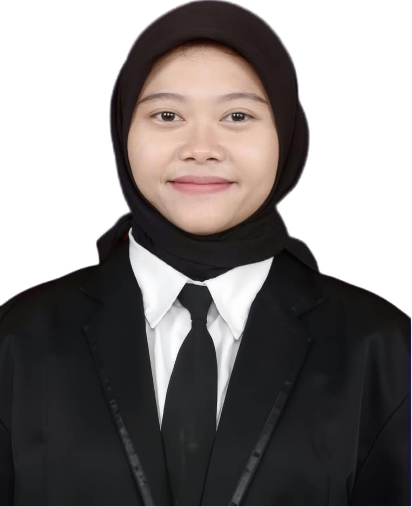

Marfika Sayekti, S.Pd.
Lulusan S1 Pendidikan Kepelatihan Olahraga (PKO) Fakultas Ilmu Keolahragaan dan Kesehatan (FIKK) Universitas Negeri Yogyakarta yang saat ini sedang menempuh Program Pendidikan Profesi Guru (PPG) Calon Guru Bidang Studi PJOK. Memiliki keahlian dan lisensi resmi kepelatihan pada cabang olahraga Futsal, Pencak Silat, serta Pelatih Kondisi Fisik (Strength & Conditioning). Berdedikasi menghadirkan pembelajaran olahraga yang humanis, inklusif, berdiferensiasi, dan memanfaatkan teknologi TPACK di SMP Negeri 12 Yogyakarta.
Filosofi Mengajar Guru PJOK
Fondasi dan paradigma berpikir dalam membimbing tumbuh kembang fisik, mental, dan emosional peserta didik.
Mendidik Melalui Gerak
Pendidikan jasmani bukan semata-mata mencetak atlet prestasi, melainkan media holistik untuk mengembangkan kebugaran jasmani, kemampuan koordinasi motorik, dan kebiasaan hidup aktif sepanjang hayat (active lifestyle for lifetime).
Penerapan di Lapangan:
- Pemanasan rekreatif berbasis permainan gerak
- Monitoring intensitas melalui tes denyut nadi berkala
- Pemberian pemahaman manfaat gerak bagi kesehatan organ tubuh
Inklusif & Berdiferensiasi
Setiap peserta didik memiliki kesiapan fisik dan modalitas gerak yang beraneka ragam. Modifikasi peraturan, ukuran bola, dan target capaian gerak menjamin seluruh siswa merasakan kegembiraan dan pengalaman sukses saat berolahraga.
Penerapan di Lapangan:
- Variasi penggunaan bola busa ramah pemula dan bola standar
- Penyesuaian tinggi net dan jarak servis bertahap
- Umpan balik personal tanpa membandingkan antar siswa
Penguatan Karakter Pancasila
Lapangan olahraga adalah laboratorium moral: kejujuran mengakui sentuhan bola keluar, sportivitas saat menang maupun kalah, kerjasama gotong royong, dan ketangguhan mental diasah secara langsung melalui aksi nyata.
Penerapan di Lapangan:
- Refleksi emosi dan kejujuran di akhir tiap sesi permainan
- Pergantian peran kapten tim secara bergilir untuk kepemimpinan
- Tradisi saling berjabat tangan dan apresiasi lawan tanding
Riwayat Pendidikan
Program Pendidikan Profesi Guru (PPG) Calon Guru
Mendalami perangkat ajar Kurikulum Merdeka, studi kasus pedagogik PJOK, serta Praktik Pengalaman Lapangan (PPL) Mandiri dan Mandiri di SMP Negeri 12 Yogyakarta.
Sarjana Pendidikan (S.Pd.) - Pendidikan Kepelatihan Olahraga
Lulus dengan predikat Pujian (Cum Laude). Fokus keilmuan metodologi kepelatihan olahraga, periodisasi latihan kondisi fisik (strength & conditioning), biomekanika gerak, serta analisis performa atlet Futsal dan Pencak Silat.
Sertifikasi & Lisensi
Sertifikat Pelatihan Kurikulum Merdeka & TPACK
Direktorat Jenderal Guru dan Tenaga Kependidikan & Universitas Negeri Yogyakarta
Tahun 2025 • TerverifikasiLisensi Pelatih Futsal Nasional
Federasi Futsal Indonesia (FFI) & PSSI • Lisensi Kepelatihan Resmi
Pelatih Futsal BerlisensiLisensi Pelatih Pencak Silat
Ikatan Pencak Silat Indonesia (IPSI) • Sertifikasi Kepelatihan Silat
Pelatih Silat BerlisensiLisensi Pelatih Fisik (Strength & Conditioning Coach)
Asosiasi Pelatih Fisik Indonesia (APFI) & FIKK Universitas Negeri Yogyakarta
Pelatih Kondisi Fisik BerlisensiPelatihan Penanganan Pertama Cedera Olahraga (P3K Lapangan)
Laboratorium Kesehatan & Fisiologi Olahraga Terapan FIKK UNY
Kompetensi Medis Lapangan